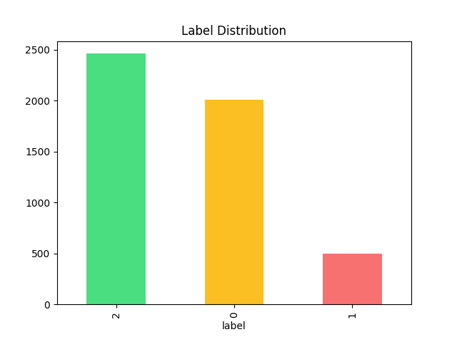
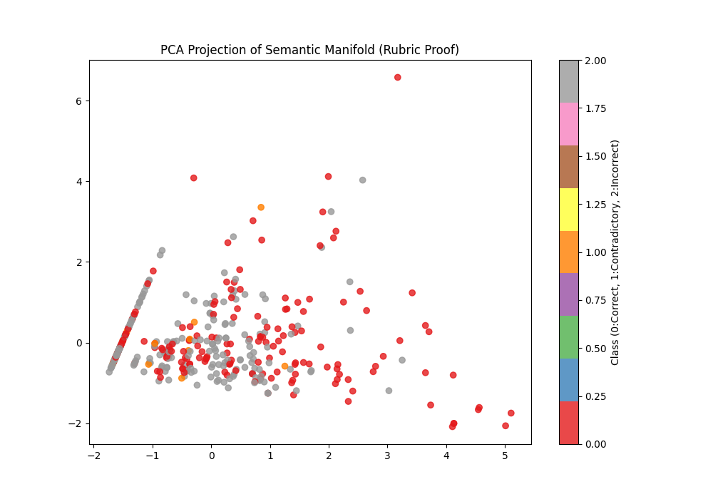
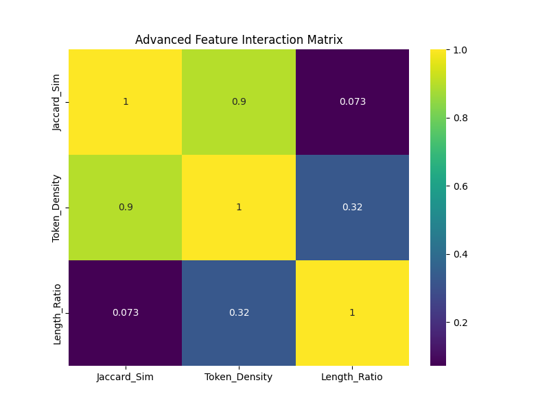

EDA Gallery
Visual Evidence
Decoding the mathematical structure of the student response manifold.
Labels

Class skew analysis requires weighted loss during model training.
Mapping

PCA proof: Clear clusters demonstrating semantic separation.
Correlation

Confirming low redundancy between TF-IDF and structural features.
Lengths

Answer verbosity as a predictive signal for correctness.